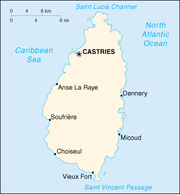

|
Saint Lucia | |
| Introduction Geography People Government Economy Communications Transportation Military Transnational Issues | ||
|  | ||
| Saint Lucia | Introduction | Top of Page |
| Background: | The island, with its fine natural harbor at Castries, was contested between England and France throughout the 17th and early 18th centuries (changing possession 14 times); it was finally ceded to the UK in 1814. Self-government was granted in 1967 and independence in 1979. |
| Saint Lucia | Geography | Top of Page |
| Location: | Caribbean, island between the Caribbean Sea and North Atlantic Ocean, north of Trinidad and Tobago |
| Geographic coordinates: | 13 53 N, 60 68 W |
| Map references: | Central America and the Caribbean |
| Area: |
total:
620 sq km
land: 610 sq km water: 10 sq km |
| Area - comparative: | 3.5 times the size of Washington, DC |
| Land boundaries: | 0 km |
| Coastline: | 158 km |
| Maritime claims: |
contiguous zone:
24 NM
continental shelf: 200 NM or to the edge of the continental margin exclusive economic zone: 200 NM territorial sea: 12 NM |
| Climate: | tropical, moderated by northeast trade winds; dry season from January to April, rainy season from May to August |
| Terrain: | volcanic and mountainous with some broad, fertile valleys |
| Elevation extremes: |
lowest point:
Caribbean Sea 0 m
highest point: Mount Gimie 950 m |
| Natural resources: | forests, sandy beaches, minerals (pumice), mineral springs, geothermal potential |
| Land use: |
arable land:
8%
permanent crops: 21% permanent pastures: 5% forests and woodland: 13% other: 53% (1993 est.) |
| Irrigated land: | 10 sq km (1993 est.) |
| Natural hazards: | hurricanes and volcanic activity |
| Environment - current issues: | deforestation; soil erosion, particularly in the northern region |
| Environment - international agreements: |
party to:
Biodiversity, Climate Change, Desertification, Endangered Species, Environmental Modification, Hazardous Wastes, Law of the Sea, Marine Dumping, Ozone Layer Protection, Ship Pollution, Whaling
signed, but not ratified: Climate Change-Kyoto Protocol |
| Saint Lucia | People | Top of Page |
| Population: | 158,178 (July 2001 est.) |
| Age structure: |
0-14 years:
32.13% (male 25,951; female 24,874)
15-64 years: 62.59% (male 48,568; female 50,430) 65 years and over: 5.28% (male 3,120; female 5,235) (2001 est.) |
| Population growth rate: | 1.23% (2001 est.) |
| Birth rate: | 21.8 births/1,000 population (2001 est.) |
| Death rate: | 5.36 deaths/1,000 population (2001 est.) |
| Net migration rate: | -4.15 migrant(s)/1,000 population (2001 est.) |
| Sex ratio: |
at birth:
1.07 male(s)/female
under 15 years: 1.04 male(s)/female 15-64 years: 0.96 male(s)/female 65 years and over: 0.6 male(s)/female total population: 0.96 male(s)/female (2001 est.) |
| Infant mortality rate: | 15.22 deaths/1,000 live births (2001 est.) |
| Life expectancy at birth: |
total population:
72.57 years
male: 69 years female: 76.39 years (2001 est.) |
| Total fertility rate: | 2.38 children born/woman (2001 est.) |
| HIV/AIDS - adult prevalence rate: | NA% |
| HIV/AIDS - people living with HIV/AIDS: | NA |
| HIV/AIDS - deaths: | NA |
| Nationality: |
noun:
Saint Lucian(s)
adjective: Saint Lucian |
| Ethnic groups: | black 90%, mixed 6%, East Indian 3%, white 1% |
| Religions: | Roman Catholic 90%, Protestant 7%, Anglican 3% |
| Languages: | English (official), French patois |
| Literacy: |
definition:
age 15 and over has ever attended school
total population: 67% male: 65% female: 69% (1980 est.) |
| Saint Lucia | Government | Top of Page |
| Country name: |
conventional long form:
none
conventional short form: Saint Lucia |
| Government type: | Westminster-style parliamentary democracy |
| Capital: | Castries |
| Administrative divisions: | 11 quarters; Anse-la-Raye, Castries, Choiseul, Dauphin, Dennery, Gros Islet, Laborie, Micoud, Praslin, Soufriere, Vieux Fort |
| Independence: | 22 February 1979 (from UK) |
| National holiday: | Independence Day, 22 February (1979) |
| Constitution: | 22 February 1979 |
| Legal system: | based on English common law |
| Suffrage: | 18 years of age; universal |
| Executive branch: |
chief of state:
Queen ELIZABETH II (since 6 February 1952), represented by Governor General Dr. Perlette LOUISY (since September 1997)
head of government: Prime Minister Kenneth ANTHONY (since 24 May 1997) and Deputy Prime Minister Mario MICHEL (since 24 May 1997) cabinet: Cabinet appointed by the governor general on the advice of the prime minister elections: none; the monarch is hereditary; the governor general is appointed by the monarch; following legislative elections, the leader of the majority party or leader of a majority coalition is usually appointed prime minister by the governor general |
| Legislative branch: |
bicameral Parliament consists of the Senate (11 seats; six members appointed on the advice of the prime minister, three on the advice of the leader of the opposition, and two after consultation with religious, economic, and social groups) and the House of Assembly (17 seats; members are elected by popular vote from single-member constituencies to serve five-year terms)
elections: House of Assembly - last held 23 May 1997 (next to be held NA 2002) election results: House of Assembly - percent of vote by party - NA%; seats by party - SLP 16, UWP 1 |
| Judicial branch: | Eastern Caribbean Supreme Court (jurisdiction extends to Anguilla, Antigua and Barbuda, the British Virgin Islands, Dominica, Grenada, Montserrat, Saint Kitts and Nevis, Saint Lucia, and Saint Vincent and the Grenadines) |
| Political parties and leaders: | National Freedom Party or NFP [Martinus FRANCOIS]; Saint Lucia Labor Party or SLP [Kenneth ANTHONY]; United Workers Party or UWP [Dr. Morella JOSEPH] |
| Political pressure groups and leaders: | NA |
| International organization participation: | ACCT (associate), ACP, C, Caricom, CDB, ECLAC, FAO, G-77, IBRD, ICAO, ICFTU, ICRM, IDA, IFAD, IFC, IFRCS, ILO, IMF, IMO, Intelsat (nonsignatory user), Interpol, IOC, ISO (subscriber), ITU, NAM, OAS, OECS, OPANAL, OPCW, UN, UNCTAD, UNESCO, UNIDO, UPU, WCL, WFTU, WHO, WIPO, WMO, WTrO |
| Diplomatic representation in the US: |
chief of mission:
Ambassador Sonia Merlyn JOHNNY
chancery: 3216 New Mexico Avenue NW, Washington, DC 20016 telephone: [1] (202) 364-6792 through 6795 FAX: [1] (202) 364-6728 consulate(s) general: Miami and New York |
| Diplomatic representation from the US: | the US does not have an embassy in Saint Lucia; the US Ambassador in Barbados is accredited to Saint Lucia |
| Flag description: | blue, with a gold isosceles triangle below a black arrowhead; the upper edges of the arrowhead have a white border |
| Saint Lucia | Economy | Top of Page |
| Economy - overview: | The recent changes in the EU import preference regime and the increased competition from Latin American bananas have made economic diversification increasingly important in Saint Lucia. Improvement in the construction sector and growth of the tourism industry helped expand GDP in 1998-99. The agriculture sector registered its fifth year of decline in 1997 primarily because of a severe decline in banana production. The manufacturing sector is the most diverse in the Eastern Caribbean, and the government is beginning to develop regulations for the small offshore financial sector. |
| GDP: | purchasing power parity - $700 million (2000 est.) |
| GDP - real growth rate: | 0.5% (2000 est.) |
| GDP - per capita: | purchasing power parity - $4,500 (2000 est.) |
| GDP - composition by sector: |
agriculture:
10.7%
industry: 32.3% services: 57% (1996 est.) |
| Population below poverty line: | NA% |
| Household income or consumption by percentage share: |
lowest 10%:
NA%
highest 10%: NA% |
| Inflation rate (consumer prices): | 2.5% (2000 est.) |
| Labor force: | 43,800 |
| Labor force - by occupation: | agriculture 43.4%, services 38.9%, industry and commerce 17.7% (1983 est.) |
| Unemployment rate: | 15% (1996 est.) |
| Budget: |
revenues:
$141.2 million
expenditures: $146.7 million, including capital expenditures of $25.1 million (FY97/98 est.) |
| Industries: | clothing, assembly of electronic components, beverages, corrugated cardboard boxes, tourism, lime processing, coconut processing |
| Industrial production growth rate: | -8.9% (1997 est.) |
| Electricity - production: | 110 million kWh (1999) |
| Electricity - production by source: |
fossil fuel:
100%
hydro: 0% nuclear: 0% other: 0% (1999) |
| Electricity - consumption: | 102.3 million kWh (1999) |
| Electricity - exports: | 0 kWh (1999) |
| Electricity - imports: | 0 kWh (1999) |
| Agriculture - products: | bananas, coconuts, vegetables, citrus, root crops, cocoa |
| Exports: | $68.3 million (2000 est.) |
| Exports - commodities: | bananas 41%, clothing, cocoa, vegetables, fruits, coconut oil |
| Exports - partners: | UK 50%, US 24%, Caricom countries 16% (1995) |
| Imports: | $319.4 million (2000 est.) |
| Imports - commodities: | food 23%, manufactured goods 21%, machinery and transportation equipment 19%, chemicals, fuels |
| Imports - partners: | US 36%, Caricom countries 22%, UK 11%, Japan 5%, Canada 4% (1995) |
| Debt - external: | $131.6 million (1998) |
| Economic aid - recipient: | $51.8 million (1995) |
| Currency: | East Caribbean dollar (XCD) |
| Currency code: | XCD |
| Exchange rates: | East Caribbean dollars per US dollar - 2.7000 (fixed rate since 1976) |
| Fiscal year: | 1 April - 31 March |
| Saint Lucia | Communications | Top of Page |
| Telephones - main lines in use: | 37,000 (1997) |
| Telephones - mobile cellular: | 1,600 (1997) |
| Telephone system: |
general assessment:
adequate system
domestic: system is automatically switched international: direct microwave radio relay link with Martinique and Saint Vincent and the Grenadines; tropospheric scatter to Barbados; international calls beyond these countries are carried by Intelsat from Martinique |
| Radio broadcast stations: | AM 2, FM 7 (plus 3 repeaters), shortwave 0 (1998) |
| Radios: | 111,000 (1997) |
| Television broadcast stations: | 3 (of which two are commercial stations and one is a community antenna television or CATV channel) (1997) |
| Televisions: | 32,000 (1997) |
| Internet country code: | .lc |
| Internet Service Providers (ISPs): | 15 (2000) |
| Internet users: | 5,000 (2000) |
| Saint Lucia | Transportation | Top of Page |
| Railways: | 0 km |
| Highways: |
total:
1,210 km
paved: 63 km unpaved: 1,147 km (1996) |
| Waterways: | none |
| Ports and harbors: | Castries, Vieux Fort |
| Merchant marine: | none (2000 est.) |
| Airports: | 2 (2000 est.) |
| Airports - with paved runways: |
total:
2
2,438 to 3,047 m: 1 1,524 to 2,437 m: 1 (2000 est.) |
| Saint Lucia | Military | Top of Page |
| Military branches: | Royal Saint Lucia Police Force (includes Special Service Unit), Coast Guard |
| Military expenditures - dollar figure: | $5 million (FY91/92) |
| Military expenditures - percent of GDP: | 2% (FY91/92) |
| Saint Lucia | Transnational Issues | Top of Page |
| Disputes - international: | none |
| Illicit drugs: | transit point for South American drugs destined for the US and Europe |
{kind=link}